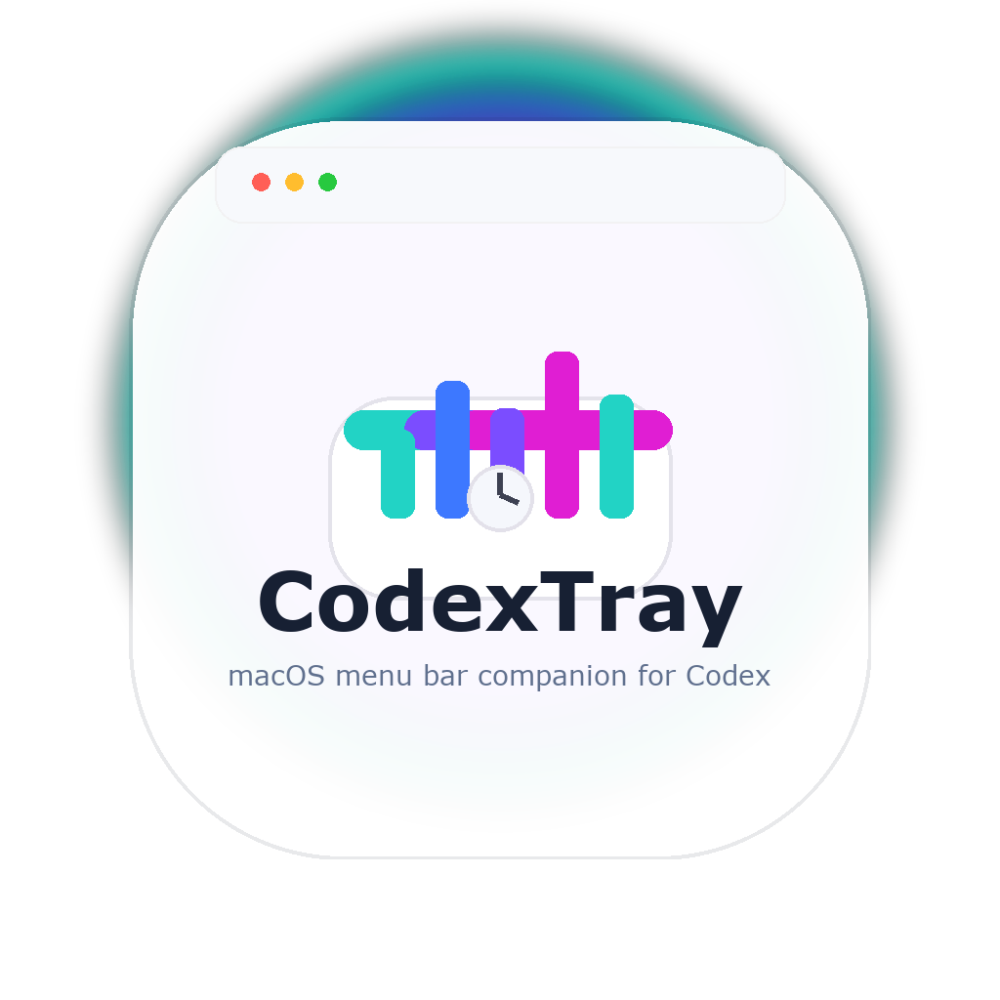
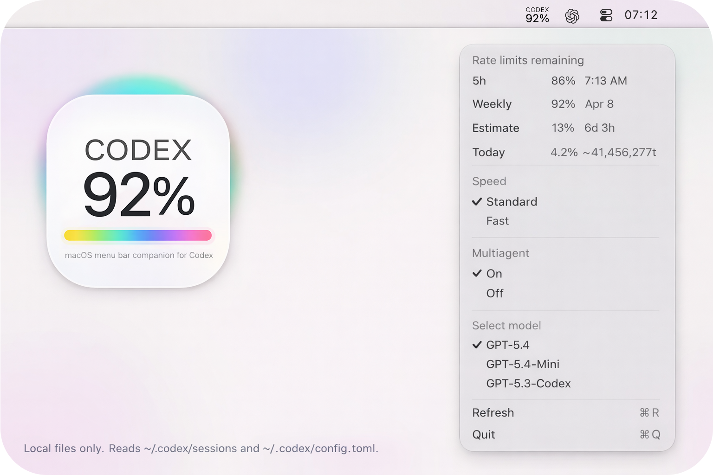

Rate limits
Current usage, weekly usage, and remaining time estimates from local session data.
MacOS menu bar companion for Codex
CodexTray reads your local Codex session logs and config from ~/.codex,
then surfaces rate limits, model, speed, and multiagent status without leaving your Mac.
~/.codex.

What it shows
Current usage, weekly usage, and remaining time estimates from local session data.
See the active model and switch quickly from the menu bar.
Toggle the settings you actually touch while working.
LaunchAgent support, app bundle build, and a lightweight status item workflow.
Inspired by the Codex experience. Not affiliated with OpenAI. Built to stay local, legible, and out of your way.